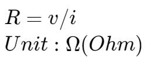
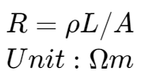

电路理论导入 | Introduction
三个假设前提 | Three Assumptions
- electrical effects happen instantaneously throughout the system.
- We assume that the net charge on every component in the system is always zero.
- We assume that there is no magnetic coupling between the components of a system.
电荷 | Charge
q Coulomb (C)
电流 | Current
Flow of electric charge in a conductor
i = dq / dt
Unit: Ampere (A)
电压 | Voltage
This potential energy difference per charge.
v = dw / dq
Unit: Volt (V)
电阻 | Resistance

电阻率 | Resistivity

电导 | Conductance
电阻的倒数 | The reciprocal of the resistance.
G = 1 / R
Unit: siemens(S)